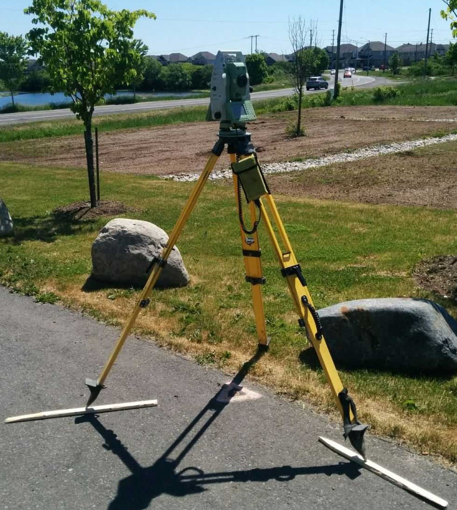

NKBM CONSULTING
Affordable, budget, cheap: Our surveying Services
As a new company our clientel is ever expanding and growing, however, due to our small size we can only offer a small amount of services to meet your surveying needs. While some jobs may be too big for us to accomplish on own (Currently) nothing is too difficult for us. Equiptment Malfunction? A little bit of water? Dense forest? Not too worry, our teams best strength is our problem solving
We Offer:
- Cadastral Surveying
- - Please contact Katelyn for historical cadastral work and Brooke for new developments
- Engineering Surveying
- - please contact Nicholas for details and availablity
- Geodetic surveying
- - our resident specialist is Miranda

